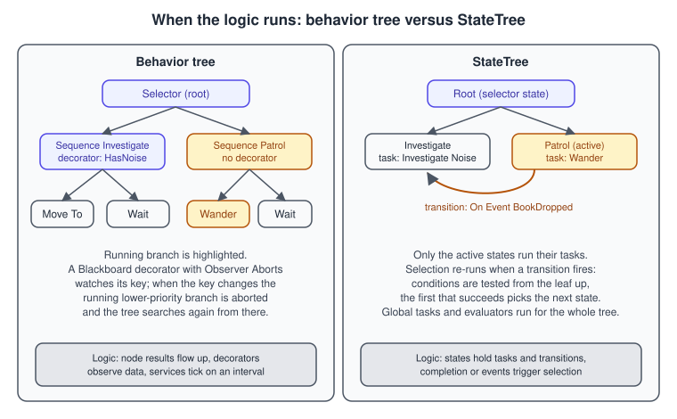
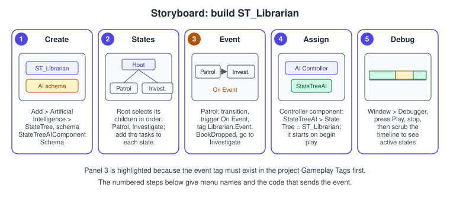
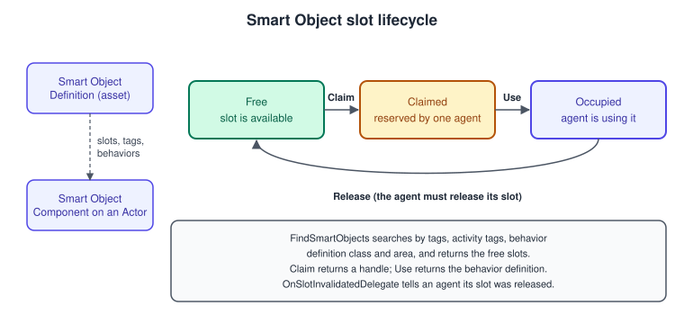

Behavior Trees and StateTree
|
This content was generated with the assistance of AI and should be verified against the official documentation before being relied on in production. |
Perception tells an AI what is happening; navigation tells it where it can go; a decision layer chooses what to do next. Unreal Engine has two main authoring tools for that layer. Behavior trees are the established tool: a tree of composites, tasks, decorators and services that is evaluated against a Blackboard of keys. StateTree is the newer tool: a hierarchical state machine whose states are selected like the branches of a behavior tree but whose logic is driven by transitions. Around both sit the Environment Query System (EQS), which finds good places or actors by generating candidates and scoring them, and Smart Objects, which describe things in the world that an agent can use.
The facts on this page were checked in November 2026 against the Unreal Engine 5.8 documentation (released 2026-06-17; the latest hotfix found is 5.8.4). Behavior trees need no plugin; StateTree is two plugins (StateTree and GameplayStateTree) that you enable per project; EQS has an Environment Query Editor plugin; Smart Objects are plugins too. Everything runs on every platform that Unreal builds for. The running example continues from
AI, Navigation and Perception: the librarian that senses the player and dropped books now decides what to do with them, first with a behavior tree and then, as the Bookshelf’s final version, with the StateTree ST_Librarian. The state-machine idea itself is engine-neutral; for the Unity counterpart see Navigation and AI.
Behavior trees

A behavior tree is an asset built in a graph editor. It does not run alone: the AI controller runs it (the Run Behavior Tree node, or AAIController::RunBehaviorTree), the tree is evaluated for the possessed pawn, and it reads and writes a Blackboard, a separate asset that holds Blackboard keys, the information the tree needs to decide (for example EnemyActor as an Object key, HasLineOfSight as a Bool and PatrolLocation as a Vector). The tree needs a navigation mesh in the level to move anywhere.
Execution runs left to right and top to bottom, with each node’s execution order number shown in its corner. The node types are:
-
Composites decide how their children run. A Selector tries its children left to right and stops at the first that succeeds; a Sequence runs them left to right and stops at the first that fails; a Simple Parallel has exactly two children, one primary task and one secondary branch, "while doing A, also do B".
-
Tasks are the leaves that act (Move To, Wait, Rotate to Face BBEntry, Run EQS Query, and your own). They have no outputs, and every leaf is an action.
-
Decorators are conditions attached to a composite or a task. A decorator decides whether its branch may run; Epic recommends them for conditionals so that every leaf is an action and a closed branch is visible at the root.
-
Services attach to composites and run a callback at an interval while their branch is active, typically to update Blackboard keys (for example re-picking the best target). They replace the parallel nodes of other systems.
Observer Aborts and event-driven evaluation
A behavior tree does not re-walk itself every frame. It listens for events, such as a Blackboard key changing, and the history and debugger show only changes of execution position or key values. A decorator exposes Observer Aborts, which makes that observation useful:
| Value | Effect when the decorator’s condition changes |
|---|---|
None |
Nothing is aborted; the condition is only checked when execution reaches the node. |
Self |
The decorator’s own node and the sub-trees running under it are aborted. |
Lower Priority |
Nodes to the right of the decorator (lower priority) are aborted so that the branch can take over. |
Both |
Self and lower-priority nodes are both aborted. |
The standard decorators include Blackboard (is a key set), Compare BBEntries, Cone Check, Cooldown, Does Path Exist, Is At Location, Is BBEntry Of Class, Check Gameplay Tag Condition, Loop and Conditional Loop, Force Success, Keep in Cone, Time Limit and the Composite decorator that combines others with AND, OR and NOT (at some cost in memory and performance). Epic’s own quick start builds a three-branch tree, AI Root (Selector) with Chase Player (guarded by a Blackboard decorator with Observer Aborts Both), Patrol and a fallback Wait, and starts it from the controller’s On Possess event.
The Bookshelf version of the same shape, BT_Librarian, uses the Blackboard BB_Librarian (SeenPlayer Object, NoiseLocation Vector, HasNoise Bool). The service below keeps the keys in sync with what the perception component sensed.
Writing behavior tree nodes in C++
A custom node is a UObject: UBTTaskNode (override ExecuteTask, AbortTask and, for latent tasks, TickTask), UBTDecorator and UBTService (override TickNode). By default nodes are shared by every agent using the tree, so per-agent state does not belong in members; set bCreateNodeInstance to true for an instance per agent (at a cost in performance and memory), or use node memory. A key a node reads is declared as an FBlackboardKeySelector, which the editor shows as a drop-down. Calling INIT_SERVICE_NODE_NOTIFY_FLAGS in a service’s constructor sets the flags that make TickNode run.
The service updates the Blackboard from the librarian controller of the previous page. It assumes the controller additions listed under the StateTree section below (GetLastNoiseLocation) and the existing GetSeenPlayer and HasPendingNoise.
// BTService_UpdateLibrarianKeys.h
#pragma once
#include "CoreMinimal.h"
#include "BehaviorTree/BTService.h"
#include "BehaviorTree/BehaviorTreeTypes.h"
#include "BTService_UpdateLibrarianKeys.generated.h"
/** Copies what the librarian controller perceived into the Blackboard. Attach it to the root Selector. */
UCLASS()
class BOOKSHELF_API UBTService_UpdateLibrarianKeys : public UBTService
{
GENERATED_BODY()
public:
UBTService_UpdateLibrarianKeys();
protected:
virtual void TickNode(UBehaviorTreeComponent& OwnerComp, uint8* NodeMemory, float DeltaSeconds) override;
/** Object key (Actor) that receives the player while seen. */
UPROPERTY(EditAnywhere, Category = "Blackboard")
FBlackboardKeySelector SeenPlayerKey;
/** Vector key that receives the place of the last book noise. */
UPROPERTY(EditAnywhere, Category = "Blackboard")
FBlackboardKeySelector NoiseLocationKey;
/** Bool key that is true while a noise has not been investigated. */
UPROPERTY(EditAnywhere, Category = "Blackboard")
FBlackboardKeySelector HasNoiseKey;
};// BTService_UpdateLibrarianKeys.cpp
#include "BTService_UpdateLibrarianKeys.h"
#include "BehaviorTree/BlackboardComponent.h"
#include "BehaviorTree/Blackboard/BlackboardKeyType_Bool.h"
#include "BehaviorTree/Blackboard/BlackboardKeyType_Object.h"
#include "BehaviorTree/Blackboard/BlackboardKeyType_Vector.h"
#include "GameFramework/Actor.h"
#include "LibrarianAIController.h"
UBTService_UpdateLibrarianKeys::UBTService_UpdateLibrarianKeys()
{
NodeName = TEXT("Update Librarian Keys");
Interval = 0.25f;
RandomDeviation = 0.05f;
INIT_SERVICE_NODE_NOTIFY_FLAGS();
// Restrict the drop-downs in the editor to keys of the right type.
SeenPlayerKey.AddObjectFilter(this, GET_MEMBER_NAME_CHECKED(UBTService_UpdateLibrarianKeys, SeenPlayerKey), AActor::StaticClass());
NoiseLocationKey.AddVectorFilter(this, GET_MEMBER_NAME_CHECKED(UBTService_UpdateLibrarianKeys, NoiseLocationKey));
HasNoiseKey.AddBoolFilter(this, GET_MEMBER_NAME_CHECKED(UBTService_UpdateLibrarianKeys, HasNoiseKey));
}
void UBTService_UpdateLibrarianKeys::TickNode(UBehaviorTreeComponent& OwnerComp, uint8* NodeMemory, float DeltaSeconds)
{
Super::TickNode(OwnerComp, NodeMemory, DeltaSeconds);
const ALibrarianAIController* Controller = Cast<ALibrarianAIController>(OwnerComp.GetAIOwner());
UBlackboardComponent* Blackboard = OwnerComp.GetBlackboardComponent();
if (!Controller || !Blackboard)
{
return;
}
// Writing a key that did not change does not wake observing decorators.
Blackboard->SetValueAsObject(SeenPlayerKey.SelectedKeyName, Controller->GetSeenPlayer());
Blackboard->SetValueAsVector(NoiseLocationKey.SelectedKeyName, Controller->GetLastNoiseLocation());
Blackboard->SetValueAsBool(HasNoiseKey.SelectedKeyName, Controller->HasPendingNoise());
}Source: UBTService API, UBTTaskNode API and Behavior Tree Node Reference
The Environment Query System
EQS answers "where should I go?" or "which actor should I pick?". A query is an Environment Query asset made of three kinds of node. A generator produces the candidate items, which are locations or actors (Actors of Class, Current Location, Composite, and the point generators: Grid, Simple Grid, Pathing Grid, Circle, Cone, Donut and On Circle). A context is a frame of reference for generators and tests; the most common is the Querier, the pawn that ran the query, and you create custom ones from EnvQueryContext_BlueprintBase or in C++. A test decides which item is best: tests are either filters (remove items) or scorers (rank them), the engine ships tests such as Distance, Dot, Pathfinding and Trace, and custom tests can only be written in C++. Filters run first, whatever the order you list them in, so fewer items get scored.
A behavior tree runs a query with the Run EQS Query task, which writes the result into a Blackboard key; a Run EQS Query service does the same periodically. In Epic’s quick start, EQS_FindPlayer uses a Points: Grid generator (half size 800, spacing 150, around the querier), a Trace test as a filter to remove points that cannot see the player and a Distance test as a scorer with a scoring factor of -1.0 to prefer closer points, and the tree then moves to the chosen location. For the librarian the same pattern finds a quiet reading corner. To preview results without running the game, place an EQS Testing Pawn in the level and set its query template; the AI debugger shows generated items as spheres (green pass, blue fail) and the Visual Logger records the data. The Environment Query Editor plugin must be enabled. In 5.8 a UEnvQuery has a bStripFromClientBuilds option, so server-only queries can be left out of client builds.
StateTree
A StateTree is a general-purpose hierarchical state machine that combines the selectors of behavior trees with the states and transitions of state machines. States sit in a tree. Each state has enter conditions, tasks and transitions. Selection starts at the root; enter conditions are tested top down; selecting a leaf activates every state from the root to that leaf, and a parent whose children all fail is not selected even if its own conditions passed. Unlike a behavior tree, which keeps re-running its selection logic, a StateTree commits to a selection and runs selection again only when a transition fires.
| Concept | Meaning |
|---|---|
Schema |
Chosen when the asset is created. |
State |
A node of the tree. A state with children is a selector state: in the classic model it is not selected itself but passes selection to one of its children. Its selection behavior decides how: Try Enter (selected even with children), Try Select Children In Order, Try Select Children at Random, Try Select Children with Highest Utility, Try Select Children at Random Weighted by Utility, and Try Follow Transitions (follow the state’s transitions instead of selecting it); an enumerator named None means the state cannot be selected directly. |
Task |
The work of a state. All tasks of an active state run concurrently. A task can finish with success or failure, and the first task to complete triggers a transition. Tasks can output values to the tree. |
Condition |
Enter conditions gate selection; transition conditions gate transitions. Built-ins compare integers, floats and gameplay tags. |
Transition |
A target state (or tree succeeded, failed, next state) with a trigger (on state completed, succeeded or failed, on tick, on event, or on delegate) and conditions. Transitions are evaluated from the leaf up to the root and the first success wins, so a parent can hold the transitions its children share. |
Evaluator |
A separate class that exposes data to the tree. It runs when the tree starts, stops and on each tick; its outputs bind to tasks and conditions. |
Global task |
A task active between tree start and stop, started before the root (global tasks arrived in 5.2); a good place for permanent data such as time of day. |
Parameters and context data |
Parameters are inputs passed into the tree; context data is defined by the schema (the context actor, or the AI controller). |
Data flows by property binding: a task’s input binds to a parameter, to context data, to an evaluator, or to an output of an earlier task in the same or a parent state. Enter conditions bind to common data and to tasks in parent states; transition conditions to common data and to tasks in the current and parent states. Epic’s guidance for structure is to group similar tasks under a parent that holds the shared transitions, chain states with the Next transition for sequences, let failure move up the tree so a parent can fall back (for example to idling), and refine behavior with a default child plus a contextual state for reactions.
Selectors with utility. The utility selection behaviors score children with considerations: a Float Input consideration maps an input through a response curve, an Enum Input maps an enum value through a table, and a Constant Input is a fixed score; scores from 0 to 1 combine with AND (the lower value) and OR (the higher), and a weight multiplies the result. Use it for "which of these three activities is most attractive right now", which a plain selector order cannot express.
Running a StateTree. The UStateTreeAIComponent (plugin GameplayStateTree, header Components/StateTreeAIComponent.h) is designed to run on an AI controller; its base UStateTreeComponent derives from UBrainComponent, so the standard StartLogic and StopLogic apply, it can start automatically on begin play (SetStartLogicAutomatically), it exposes GetStateTreeRunStatus and an OnStateTreeRunStatusChanged delegate, and it receives events with SendStateTreeEvent.
Source: Overview of State Tree, StateTree Selectors Overview, EStateTreeTransitionTrigger API and UStateTreeComponent API
Writing StateTree tasks in C++
A StateTree node is not a UObject: it is a USTRUCT derived from FStateTreeTaskCommonBase (or FStateTreeAITaskBase for tasks that run on an AIController). The struct holds no per-run state, because one node is shared by every running tree; per-run data lives in a separate instance data struct that the engine stores for each active task. The node reports its instance data type with GetInstanceDataType and reads it with Context.GetInstanceData(*this). The virtual functions are EnterState (a state was entered), Tick (each tick while active), ExitState and StateCompleted; the first two return an EStateTreeRunStatus of Running, Succeeded or Failed. Properties of the instance data tagged with the category Context are bound to the schema’s context data (here the AI controller), Input and Output categories bind to other nodes, and Parameter is set in the editor.
The next code adds two tasks for the librarian, Wander and Investigate Noise, which wrap the controller functions from the previous page, and the controller additions that the tree and the Blackboard service need.
// LibrarianStateTreeTasks.h
#pragma once
#include "CoreMinimal.h"
#include "StateTreeTaskBase.h"
#include "LibrarianStateTreeTasks.generated.h"
class ALibrarianAIController;
/** Instance data of the Wander task. */
USTRUCT()
struct BOOKSHELF_API FLibrarianWanderTaskInstanceData
{
GENERATED_BODY()
/** Bound to the AIController of the AI component schema. */
UPROPERTY(EditAnywhere, Category = "Context")
TObjectPtr<ALibrarianAIController> Controller = nullptr;
/** How far from the current location a new destination may be. */
UPROPERTY(EditAnywhere, Category = "Parameter", meta = (ClampMin = "100.0"))
float Radius = 800.f;
};
/** Walks to a random reachable point and succeeds on arrival. */
USTRUCT(meta = (DisplayName = "Librarian Wander", Category = "Bookshelf"))
struct BOOKSHELF_API FLibrarianWanderTask : public FStateTreeTaskCommonBase
{
GENERATED_BODY()
using FInstanceDataType = FLibrarianWanderTaskInstanceData;
virtual const UStruct* GetInstanceDataType() const override { return FInstanceDataType::StaticStruct(); }
virtual EStateTreeRunStatus EnterState(FStateTreeExecutionContext& Context, const FStateTreeTransitionResult& Transition) const override;
virtual EStateTreeRunStatus Tick(FStateTreeExecutionContext& Context, const float DeltaTime) const override;
virtual void ExitState(FStateTreeExecutionContext& Context, const FStateTreeTransitionResult& Transition) const override;
};
/** Instance data of the Investigate Noise task. */
USTRUCT()
struct BOOKSHELF_API FLibrarianInvestigateTaskInstanceData
{
GENERATED_BODY()
UPROPERTY(EditAnywhere, Category = "Context")
TObjectPtr<ALibrarianAIController> Controller = nullptr;
};
/** Walks to the last heard noise; succeeds when it arrives and fails when the move fails. */
USTRUCT(meta = (DisplayName = "Librarian Investigate Noise", Category = "Bookshelf"))
struct BOOKSHELF_API FLibrarianInvestigateTask : public FStateTreeTaskCommonBase
{
GENERATED_BODY()
using FInstanceDataType = FLibrarianInvestigateTaskInstanceData;
virtual const UStruct* GetInstanceDataType() const override { return FInstanceDataType::StaticStruct(); }
virtual EStateTreeRunStatus EnterState(FStateTreeExecutionContext& Context, const FStateTreeTransitionResult& Transition) const override;
virtual EStateTreeRunStatus Tick(FStateTreeExecutionContext& Context, const float DeltaTime) const override;
virtual void ExitState(FStateTreeExecutionContext& Context, const FStateTreeTransitionResult& Transition) const override;
};// LibrarianStateTreeTasks.cpp
#include "LibrarianStateTreeTasks.h"
#include "LibrarianAIController.h"
#include "Navigation/PathFollowingComponent.h"
#include "StateTreeExecutionContext.h"
namespace
{
/** True when the controller has no move in progress. */
bool IsMoveFinished(const ALibrarianAIController& Controller)
{
return Controller.GetMoveStatus() == EPathFollowingStatus::Idle;
}
}
EStateTreeRunStatus FLibrarianWanderTask::EnterState(FStateTreeExecutionContext& Context, const FStateTreeTransitionResult& Transition) const
{
FInstanceDataType& Data = Context.GetInstanceData(*this);
if (!Data.Controller || !Data.Controller->Wander(Data.Radius))
{
return EStateTreeRunStatus::Failed; // no controller or no reachable point
}
return EStateTreeRunStatus::Running;
}
EStateTreeRunStatus FLibrarianWanderTask::Tick(FStateTreeExecutionContext& Context, const float DeltaTime) const
{
const FInstanceDataType& Data = Context.GetInstanceData(*this);
return IsMoveFinished(*Data.Controller) ? EStateTreeRunStatus::Succeeded : EStateTreeRunStatus::Running;
}
void FLibrarianWanderTask::ExitState(FStateTreeExecutionContext& Context, const FStateTreeTransitionResult& Transition) const
{
// Leaving the state (for example for Investigate) must stop the walk.
if (const FInstanceDataType& Data = Context.GetInstanceData(*this); Data.Controller)
{
Data.Controller->StopMovement();
}
}
EStateTreeRunStatus FLibrarianInvestigateTask::EnterState(FStateTreeExecutionContext& Context, const FStateTreeTransitionResult& Transition) const
{
FInstanceDataType& Data = Context.GetInstanceData(*this);
if (!Data.Controller || !Data.Controller->InvestigateNoise())
{
return EStateTreeRunStatus::Failed;
}
return EStateTreeRunStatus::Running;
}
EStateTreeRunStatus FLibrarianInvestigateTask::Tick(FStateTreeExecutionContext& Context, const float DeltaTime) const
{
const FInstanceDataType& Data = Context.GetInstanceData(*this);
if (!IsMoveFinished(*Data.Controller))
{
return EStateTreeRunStatus::Running;
}
// OnMoveCompleted cleared the pending flag on success; a failed move leaves it set.
return Data.Controller->HasPendingNoise() ? EStateTreeRunStatus::Failed : EStateTreeRunStatus::Succeeded;
}
void FLibrarianInvestigateTask::ExitState(FStateTreeExecutionContext& Context, const FStateTreeTransitionResult& Transition) const
{
if (const FInstanceDataType& Data = Context.GetInstanceData(*this); Data.Controller)
{
Data.Controller->StopMovement();
}
}// LibrarianAIController.h: additions to the class from the previous page
#include "GameplayTagContainer.h"
class UStateTreeAIComponent;
// ... inside ALibrarianAIController, public section:
/** Place of the last heard book noise; valid while HasPendingNoise() is true. */
FVector GetLastNoiseLocation() const { return LastNoiseLocation; }
// ... inside the private section:
/** Runs ST_Librarian. Assign the asset in the Blueprint subclass's Details panel. */
UPROPERTY(VisibleAnywhere, Category = "AI")
TObjectPtr<UStateTreeAIComponent> StateTreeAI;
FGameplayTag BookDroppedEventTag;// LibrarianAIController.cpp: additions to the class from the previous page
#include "Components/StateTreeAIComponent.h"
// In the constructor:
StateTreeAI = CreateDefaultSubobject<UStateTreeAIComponent>(TEXT("StateTreeAI"));
// In BeginPlay, after Super::BeginPlay():
BookDroppedEventTag = FGameplayTag::RequestGameplayTag(FName(TEXT("Librarian.Event.BookDropped")));
// In HandleTargetPerceptionUpdated, in the hearing branch after bHasPendingNoise = true:
if (StateTreeAI)
{
// Wakes any transition whose trigger is On Event with this tag.
StateTreeAI->SendStateTreeEvent(BookDroppedEventTag, FConstStructView(), FName(TEXT("Perception")));
}; Config/Tags/LibrarianTags.ini: the event tag must exist before the tree can refer to it.
[/Script/GameplayTags.GameplayTagsList]
+GameplayTagList=(Tag="Librarian.Event.BookDropped",DevComment="A book hit the floor within hearing range")The module dependencies are StateTreeModule, GameplayStateTreeModule, GameplayTags, AIModule and GameplayTasks; the plugins are StateTree and GameplayStateTree. Task flags such as bShouldCallTick, bShouldStateChangeOnReselect and bShouldAffectTransitions on the node base control when the engine calls a task, and the engine’s own FStateTreeMoveToTask (moves the pawn of an AIController using the AITask_MoveTo framework) and FStateTreeRunEnvQueryTask (runs an async environment query and outputs the result) are ready-made alternatives to hand-written ones. The FStateTreeAIActionTaskBase base class is for AI tasks that perform a physical action.
The librarian StateTree
Patrol is first in the child order, so it is entered when the tree starts. When Patrol finishes, a transition back to the root re-runs selection and starts another wander. When the controller sends the Librarian.Event.BookDropped event, the on-event transition leaves Patrol (stopping its walk in ExitState) and enters Investigate. Investigate returns to Patrol whether it succeeds or fails.

-
Enable the StateTree and GameplayStateTree plugins in Edit > Plugins and restart the editor. Add the module dependencies and the gameplay tag file above and compile the C++ classes.
-
In the Content Browser choose Add > Artificial Intelligence > StateTree, pick
StateTreeAIComponentSchemaand name the assetST_Librarian. If a tree does not appear in a component’s asset drop-down, the wrong schema was chosen. -
Add a state
Rootwith the selection behavior Try Select Children In Order, and under it the statesPatrolandInvestigate. Add the task Librarian Wander to Patrol and Librarian Investigate Noise to Investigate; theControllerinput of each binds to the AI controller context data. -
On
Patroladd a transition with the trigger On State Completed toRoot, and a second transition with the trigger On Event and the tagLibrarian.Event.BookDroppedtoInvestigate. OnInvestigateadd transitions on State Succeeded and State Failed toPatrol. -
Open the Blueprint subclass of
ALibrarianAIController(or the controller class defaults) and set the State Tree of theStateTreeAIcomponent toST_Librarian. -
Press Play. Open Window > Debugger, record an execution, stop play mode and scrub the timeline: the Details panel shows the active state’s global tasks and evaluators, tasks and transitions with the data they used.
The debugger uses the engine’s trace services (the same infrastructure as Unreal Insights), supports live debugging in editor sessions and in standalone, client and server sessions, and can save and load trace files.
Smart Objects

A Smart Object is anything in the world that an agent can use, such as a chair at a reading desk. It holds no execution logic: it provides the interactor with the information needed, and the interactor’s own implementation decides how to carry out the interaction. A Smart Object Definition is a data asset with immutable data shared by all runtime instances: slots (each with a location and rotation relative to an anchor, and overridable tags and behavior), filter tags, activity tags and default behavior definitions (the types are Mass Entity Behavior and Gameplay Behavior; a slot’s own definition overrides the default). A Smart Object Component added to an actor marks it as a smart object and references a definition. The Smart Object Subsystem tracks all objects in the level and answers queries by area and tags.
An agent uses the objects in a fixed order: find (FindSmartObjects by tags, activity tags, behavior definition class and area, returning handles and free slots), claim a slot (the call returns a claim handle that the agent must validate), move to the slot location, use it (the slot changes from Claimed to Occupied and the behavior definition is returned), and release it (Occupied becomes Free). Agents are responsible for releasing their slots; OnSlotInvalidatedDelegate notifies an agent when a state change released its slot. For Gameplay Behaviors the Blueprint nodes Move to and Use Smart Object with Gameplay Behavior and Use Smart Object with Gameplay Behavior (with a claim handle from UAITask_UseGameplayBehaviorSmartObject) do the work, and the older UseGameplayBehaviorSmartObject function is deprecated. Smart Objects are also driven from StateTree and, with the Mass Entity Behavior type, from Mass crowds (see Mass Entity).
Source: Smart Objects Overview and Smart Objects Quick Start
Choosing between a behavior tree and a StateTree
Both are first-class and can be combined: a behavior tree can run a StateTree with UBTTask_RunStateTree. These are guidelines, not rules.
| Question | Behavior tree | StateTree |
|---|---|---|
How does logic run? |
Event-driven search: decorators observe keys and abort running branches. |
On demand: selection re-runs only when a transition fires. |
Where does the data live? |
In a Blackboard of named keys, written by services and tasks. |
In bound properties: parameters, context data, evaluators and task outputs, with no separate Blackboard. |
How do you express "react to this at once"? |
A decorator with Observer Aborts on a Blackboard key. |
A transition with an event or tick trigger and conditions. |
Good fit |
Priority-ordered behaviors that must re-evaluate when facts change; teams that already have trees. |
Clear states with explicit exits (patrol, investigate, sit); agents run by Mass; behavior shared with Smart Objects; designers who think in states. |
Debugging |
AI debugger view and Blackboard values; breakpoints on nodes. |
StateTree debugger timeline with the active states, tasks and transitions. |
Common mistakes
-
Putting per-agent state in a behavior tree node’s members. Nodes are shared by default. Use node memory, a Blackboard key or
bCreateNodeInstance. -
Using a
UPROPERTYobject pointer in node memory. Per-agent node data is not garbage collected; useTWeakObjectPtr. -
Observer Aborts on the wrong value. Self only aborts below the decorator; to stop a running lower-priority branch use Lower Priority or Both.
-
A tree without a Blackboard asset, or a key the tree never writes. Services and tasks must write the keys that decorators read.
-
Forgetting to start the tree. Call Run Behavior Tree (or
RunBehaviorTree) inOnPossess, or keep the StateTree component’s automatic start on. -
Choosing the wrong StateTree schema. A tree made for the component schema will not appear on the AI component, and vice versa.
-
Keeping run state in the StateTree node struct. Put it in instance data; the node is shared by every running tree.
-
Not stopping movement on exit. A task that starts a move must stop it in
ExitState, or an old move continues under the new state. -
An event tag that is not registered.
RequestGameplayTagreturns an invalid tag and the transition never fires; add the tag to the project’s tag list. -
Never releasing a Smart Object slot. A claimed slot stays unavailable to everyone else.
-
Running expensive EQS every tick. Run queries on demand or at a slow interval.
Performance notes
-
Behavior trees scale well because they are event-driven, not re-walked each frame. The cost sits in services that tick on an interval and in per-agent node instances; keep service intervals long and the number of simultaneous sub-trees small.
-
StateTree only ticks tasks of active states. In 5.8 shared instance storage is no longer created when a tree has no shared data, which reduces runtime memory. Queued asynchronous compilation on the game thread exists but is disabled by default.
-
EQS: filters run before scorers, so put cheap filters first in your design, keep generators small (grid half size and spacing set the item count) and avoid path-based tests on large grids.
-
Many agents: a StateTree per pawn is fine for dozens of characters; for thousands use Mass with a StateTree per entity (see Mass Entity).
-
Measure with the debuggers and the profiler workflow in Profiling and Optimization.
What changed recently
| Version | Change |
|---|---|
UE 5.2 |
Global tasks were introduced in StateTree: tasks that run between tree start and stop, started before the root. |
UE 5.8 (June 2026) |
StateTree starting states and compiler extensions: trees can define their starting state, with an option to override the start state by gameplay tag when starting the tree; a Compiler Manager streamlines iteration; the editor flags trees that are out of date; property binding is more robust and can be reversed; bindings were updated for reinstancing of user-defined structs, Blueprints and objects. |
UE 5.8 |
Shared StateTree instance storage is not created when there is no shared data; queued asynchronous compilation is available but disabled by default; the Rewind Debugger uses per-provider locking for trace providers including the StateTree provider. |
UE 5.8 |
Mass overhaul with a new |
UE 5.8 |
|
Where the books are outdated
The books cover AI and state logic in these places: Blueprints Visual Scripting for Unreal Engine (Marcos Romero and Brenden Sewell, UE 4.20 to 4.22) in chapters 9 and 10, Unreal Engine 4.X By Example (Benjamin Carnall, UE 4.10 and 4.11) in chapters 7 and 8, Unreal Engine 5 Game Development with C++ Scripting (Zhenyu George Li and E. Wyn Roberts, UE 5.0 and later) in chapter 7, Unreal Engine: Game Development from A to Z (Joanna Lee, John P. Doran and Nitish Misra, UE 4.7 to 4.10) in module 1, chapter 5, and, for states, Unreal Development Kit Game Programming with UnrealScript: Beginner’s Guide (Rachel Cordone, UDK 2011) in chapter 6.
| Book | Technique | What is current in UE 5.8 |
|---|---|---|
Blueprints Visual Scripting ch. 9 and 10; Unreal Engine 4.X By Example ch. 7 and 8; A to Z module 1 ch. 5 |
Behavior trees, Blackboards, tasks, services and EQS of the 4.x era |
The concepts still hold: composites, tasks, decorators with Observer Aborts, services and Blackboard keys. Since then StateTree (two plugins, with global tasks from 5.2 and starting states and a compiler manager in 5.8), Smart Objects with Gameplay Behaviors and the StateTree debugger were added, and a tree can run a StateTree with |
Unreal Engine 5 Game Development with C++ Scripting ch. 7 |
AI of UE 5.0 |
It predates StateTree as a tool for characters, Mass, Enhanced Input as the default, MegaLights, Iris and Substrate. Use AI Perception (previous page) for senses and StateTree or behavior trees for decisions. |
UDK Game Programming with UnrealScript ch. 6 |
UnrealScript |
Language-level states disappeared with UnrealScript, which Epic replaced with C++ and Blueprints in UE4 (2014). The idea of a state machine lives on as an editor asset, StateTree, which adds hierarchy, tasks, bound data and a debugger. Historical context only. |
See also
-
AI, Navigation and Perception: the controller, NavMesh and senses these trees use.
-
Mass Entity: StateTree and Smart Objects at crowd scale.
-
Gameplay Ability System: the Speed-read ability that an AI can also activate.
-
Gameplay Framework: controllers and possession.
-
UObject, Reflection and Garbage Collection: why StateTree nodes are structs.
-
Navigation and AI (Unity): the Unity counterpart.
-
Entity Component System: data-oriented design behind Mass.